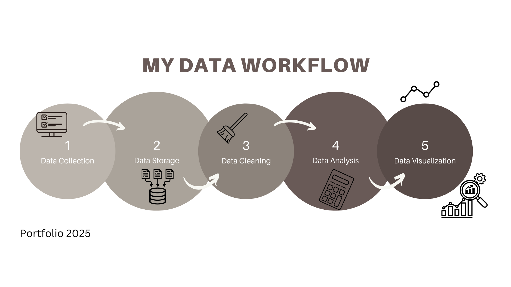

Data Analytics
This visual represents the key stages of my data workflow—from collecting raw data to producing clear, insightful visualizations. Below are projects I have made to show my proficiency with the corresponding steps.
1. Data Collection
Projects involving raw data acquisition through APIs, CSVs, and external sources.
Skills: APIs, CSVs, Python
2. Data Storage
Projects showcasing my ability to model and implement relational databases with SQL.
Skills: Relational Databases, Oracle SQL, ER/EER Diagrams, Schema Design, Normalization
3. Data Cleaning
Removing duplicates, handling missing values, and formatting data using Excel or Python's pandas library.
Skills: Pandas, Excel, Data Wrangling, Missing Value Handling, Standardization
4. Data Analysis
Performing exploratory analysis, calculating KPIs, and discovering trends with SQL, Excel formulas, and visual summaries.
Skills: SQL, Excel Formulas, Python Stats, KPIs, Exploratory Data Analysis
5. Data Visualization
Creating dynamic dashboards using Power BI and generating charts with Matplotlib to support data storytelling.
Skills: Power BI, Matplotlib, Data Storytelling, Dashboard Design, Visual Encoding
Honors Project – Search Algorithm Visualization
Developed a visualization tool to compare search algorithms (BFS, DFS, A*, etc.) using Python. Demonstrated how different algorithms traverse a map and arrive at solutions using NetworkX and Matplotlib.
Skills: Python, NetworkX, Matplotlib, A* Search, BFS, DFS, Algorithm Visualization
View on GitHubAdditional Skills
Portfolio Website
Built and deployed this personal portfolio using HTML and CSS. Hosted on GitHub Pages with version control using Git.
- HTML
- CSS
- Git
- GitHub Pages
Contact Me
Email: reedhaileyann@gmail.com
Phone: (475) 224 7376
LinkedIn: linkedin.com/in/hailey-ann-reed
About Me
I’m a junior Computer Science major at the University of Connecticut with a concentration in Computational Data Analytics and a minor in Mathematics. I aspire to work with Big Data — whether as a data analyst, data engineer, or in the field of quantitative finance.
Charlie 🐾
Meet my Golden Retriever puppy, Charlie! He makes a fantastic assistant and is passionate about relational databases.